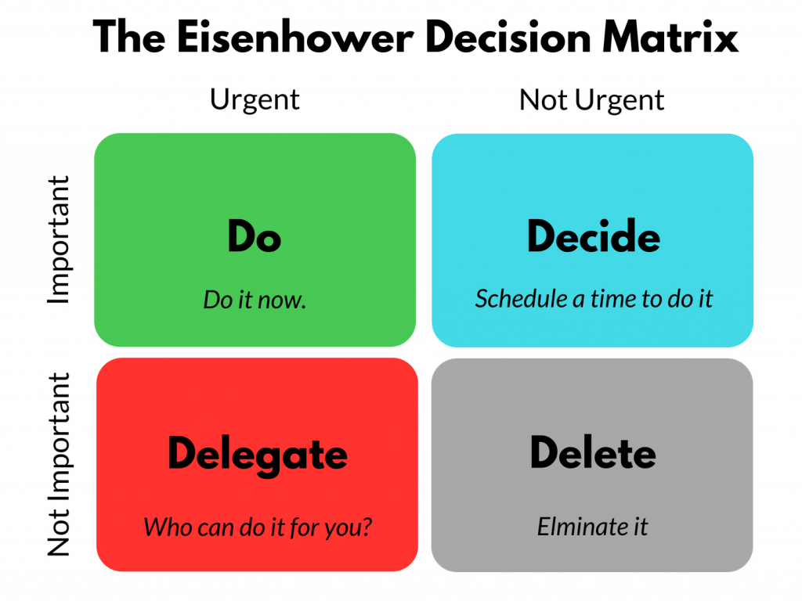

Effective Time Management Strategies
Effective time management is the key to work-life balance for an IT intern...
The Pomodoro Technique
The Pomodoro Technique is a time management strategy that involves working in 25-minute blocks, each followed by a 5-minute break...

Figure 1: The Pomodoro Technique Workflow
Benefits:
- Boosts concentration during work periods.
- Helps prevent burnout by incorporating frequent breaks.
- Keeps productivity steady over the day.
Setting Priorities with the Eisenhower Matrix
The Eisenhower Matrix is a prioritization tool that categorizes tasks based on urgency and importance...

Figure 2: The Eisenhower Matrix for Prioritizing Tasks
Benefits:
- Clarifies urgent versus non-urgent tasks.
- Prevents procrastination by focusing on what matters most.
- Ensures long-term goals are not neglected.
Creating a Daily Schedule
Creating a daily schedule is crucial for maintaining a work-life balance...
Tips for Scheduling:
- Set Working Hours: Define specific start and end times for work.
- Break Tasks: Tackle tasks in achievable steps.
- Allow Breaks: Schedule short breaks throughout the day and time to unwind after work.
Benefits: Promotes discipline and consistency, reduces stress by making tasks more manageable, supports a healthy balance between work and personal time.